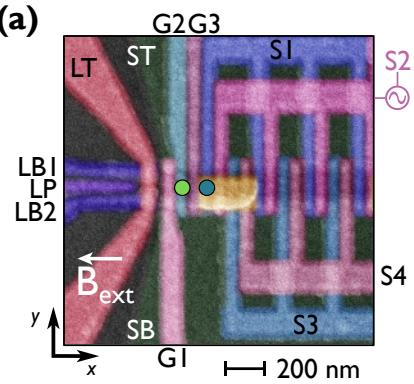
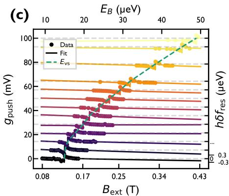
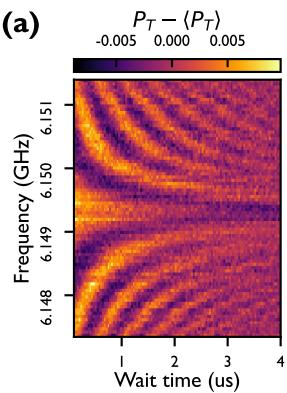
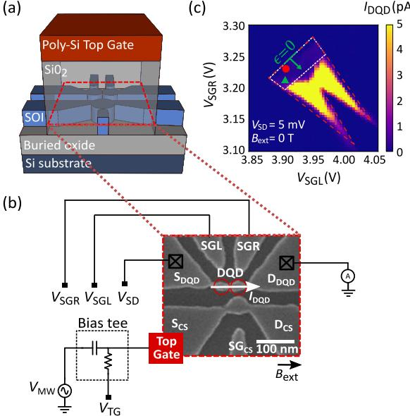
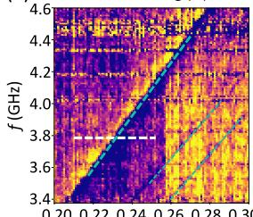

物理动机
电子自旋本身没有电偶极矩——直接对电子加电场不会进入自旋空间。Loss–DiVincenzo 比特的标准单自旋比特门因此需要片上天线产生交变磁场（ESR 方案），但大电流带来的加热把天线驱动的 Rabi 频率限制在 1 MHz 以下，且每根天线只能覆盖一片区域，与多比特阵列天然不兼容。
电偶极自旋共振（electric dipole spin resonance，EDSR）走另一条路：把微波电压加到定义量子点的栅极上，让栅电场先调制载流子的轨道波函数 ，再用空间不均匀磁场或材料内禀自旋轨道耦合把位移转换为自旋感受到的有效振荡磁场 。结果是门极既能定义量子点又能驱动自旋，不必再为每个比特设计独立天线，操控速率正比于梯度或自旋轨道强度，典型可达 10–30 MHz（硅电子体系）乃至百 MHz 量级（锗空穴体系）。代价是同一耦合通道也把电荷噪声反向注入自旋通道，使”驱动强”与”相干好”往往不能同时最大化。
两条物理路径
按”位移如何映射为有效磁场”划分，EDSR 在硅基与锗基两条路线中走过的路径截然不同。
人工合成自旋轨道耦合（合成 SOC，微磁体路线）。在硅、Si/SiGe 与 Si-MOS 中，自旋轨道耦合极弱，需要在量子点附近集成微磁体（常用 Co、坡莫合金等微米尺度磁体）来提供空间不均匀磁场。微磁体的总磁场在量子点处通常写作 ： 是被外磁场磁化后的均匀分量； 是沿量子化轴的纵向梯度，用来给同阵列中的不同比特错开拉莫尔频率实现寻址； 是垂直于量子化轴的横向梯度，把电子位移 （、 是量子点谐振子势的特征长度与轨道能级间距）转换为有效磁场 。两套梯度分别服务于”寻址”与”驱动”，但它们无法独立调谐——几何上一旦微磁体形状固定，两者就同时被决定，这是微磁体优化研究反复权衡的核心。
内禀自旋轨道耦合（本征 SOC，锗空穴路线）。Ge/SiGe 异质结价带顶由 重空穴主导， 轨道成分与晶格应变共同打开强 Rashba–Dresselhaus 型自旋轨道耦合，无需任何外部磁体就能把电场直接转换为等效磁场。该有效磁场可写为
其中 是自旋轨道长度（ 分别为 Rashba、Dresselhaus 系数）， 是量子点尺寸， 是限制势能级间距（或 hh–lh 子带分裂）， 是无量纲的 SOC 强度。Ge 纳米线空穴体系 –，比 GaAs 电子（）短一个量级以上，单位电场位移能产生更显著的自旋转动；同时空穴缺乏 轨道超精细耦合，纯化 Ge 体系中核自旋噪声几乎可忽略。这两点是空穴自旋比特在 EDSR 速度与单比特门保真度上跑赢电子路线的物理基础。
硅电子 EDSR 与锗空穴 EDSR 在哈密顿量结构上同构（都是 ），只是 的微观来源不同——前者源自微磁体的合成 SOC，后者源自材料的本征 SOC。这把两套看似独立的实验纳入同一物理图像，也意味着两套体系面对同一类噪声——电荷涨落通过 SOC 通道回灌到自旋频率——必须用同一思路解决。
第三条路径：自旋–谷热点增强的内禀 SOC（硅电子）
硅电子的内禀 SOC 通常被当作”太弱、不可用”，但 Si/SiGe 的谷自由度提供了一个例外窗口：当塞曼能逼近谷劈裂（，自旋–谷热点）时， 与 两态经界面对称破缺诱导的自旋–谷杂化强烈混合，内禀 SOC 驱动强度被急剧放大。Willmes 等人 2026 年在 800 ppm 浓缩 的 LD 比特上给出了第一个靠近热点的相干演示——器件本想用钴纳米磁体做 s-SOC，但磁体氧化失效（残余磁化仅 0.7 mT，远低于预期的 ≥10 mT），反倒做成了”纯 i-SOC”实验。

器件与实验方案：(a) 伪彩 SEM——绿色/蓝色点为左/右量子点，琥珀色为（失效的）钴纳米磁体，微波经栅组 S2 驱动右点 EDSR，外磁场沿沟道方向；器件由穿梭段（S1–S4）、静态点（G1–G3）与 SET 组成，在 (3,1)–(4,0) 区以泡利自旋阻塞读出（200 μs 锁相）。图源：Willmes et al. (2026), Fig. 1(a)。
热点谱学与 定标。用虚拟栅 把右点沿沟道平移几 nm、改变局域谷劈裂，对外磁场逐点测共振频率并扣除线性塞曼斜率，得到的特征反交叉即热点位置（本文约 230 mT）。反交叉随 的移动同时给出 地图与自旋–谷耦合矩阵元 （决定反交叉宽度）——本文测得的 比 Si/SiGe 此前报告大约一个量级。
Rabi 频率的增强与不对称。Huang–Hu 四态模型给出热点附近的 Rabi 频率（i-SOC 路径，， 是到杂化态的能量差）：
其中 是谷间偶极矩阵元（对界面微观细节敏感、作唯象参数处理）；两条自旋–谷混合路径的相对相位由 SOC 的性质决定——s-SOC 破坏时间反演对称、路径相长，i-SOC 不破坏、路径相消，故 i-SOC 的增强峰更不对称。实验确在 处观察到 急剧增大，且两侧不对称（ 侧饱和为非零常数、 侧迅速归零）——不对称程度超出四态模型，提示谷间偶极矩阵元本身随点位置/合金无序非平凡变化。更靠近热点时 Chevron 图样严重畸变（唯象因子 从 1 降到 0.45），无法可靠提取 。

主结果——Rabi 频率随热点距离的变化：横轴 ΔE_vs = E_vs − E_B（由 g_push 扫描 E_vs、外磁场设定 E_B），多个磁场下 f_R 都在热点附近急剧增强且两侧明显不对称（红色区域 Chevron 畸变、无法提取）；不同磁场数据趋势一致，说明增强主要取决于能量空间中到热点的距离。图源：Willmes et al. (2026), Fig. 2(d)。
相干性与保真度。远离热点（、、 门集）：AllXY 标定后随机基准给 、平均 Clifford 保真度 98.6%；Ramsey 中位 （强烈依赖位置）。保真度比微磁体 s-SOC 的最好值差约三个量级，主要受频率噪声限制：测得电荷噪声 （1/f 型）只能部分解释 ，且 对热点距离的依赖比纯电荷噪声模型更弱——作者推测热点附近残余核自旋效应被增强（动态核极化反馈、电子介导核翻转），这也与 Chevron 的不规则跳变相符。

远离热点工作点的 Ramsey 实验（B_ext=220 mT，与随机基准同一静电位形）：衰减振荡拟合给出中位 T₂≈2.3 μs——同位素纯度下偏短，热点提供的电荷噪声耦合通道与残余核自旋效应是候选解释。图源：Willmes et al. (2026), Fig. 3(a)。*
适用边界：热点位置随谷劈裂逐点涨落（合金无序），把它当作规模化驱动策略不现实；但 i-SOC 操控让无微磁体区域（如穿梭通道）的比特表征成为可能，也是理解 s-SOC 器件中 i-SOC 修正是（比特均匀性、保真度来源）的必要一环。谷劈裂的统计分布与热点压制策略见谷劈裂词条。
理论模型
单点 EDSR 哈密顿量
在实验室坐标系下，自旋比特在静磁场 中的自由哈密顿量为 ；EDSR 引入的驱动项可等效为垂直于量子化轴的有效振荡磁场 ，总哈密顿量为
进入频率 的旋转坐标系并作RWA，失谐 （）时有效哈密顿量化为
即与Rabi 振荡词条给出的形式一致。共振时态矢量在赤道面上以 Rabi 频率
进动，控制相位 即可实现绕 或 的任意单比特旋转。两者唯一区别是 在 ESR 中来自天线电流、在 EDSR 中来自合成/本征 SOC 把电场转换出的等效磁场。
把驱动用耦合强度参数化，可以更直接地看出”电场 自旋”的传递链。对微磁体路线，在简谐势阱近似下（、， 为势阱圆频率）
即 Rabi 频率与栅极电场幅度 、横向梯度 成正比，与轨道能级间距的平方成反比——减小量子点尺寸既放大电偶极矩也放大梯度，但同时缩小了能级间距使比特更易受高频电荷噪声影响，是 EDSR 工程中典型的”两难折中”。
翻转模式（flopping mode）哈密顿量
单点 EDSR 的瓶颈是电子被束缚在单个势阱内， 引起的波函数位移幅度有限。2017 年 Croot 等在 Si/SiGe 双量子点零失谐处实现”翻转模式 EDSR”——把电子放在隧穿耦合 远大于 的双量子点中，电荷本征态 、 不再局域，电子在两点之间”翻转”，电偶极矩被隧穿耦合放大。
把自旋自由度一并纳入，基矢 下论文给出
其中 是双量子点能级失谐、 是隧穿耦合、 是微磁体横向梯度引入的等效 SOC、 是纵向梯度。把轨道部分对角化后，最低两个本征态 、 之间的翻转速率为
其中 （ 是点间距）是零失谐处电荷翻转的 Rabi 频率。零失谐时电偶极矩与等效 SOC 同时取极大， 比大失谐处提高近一个量级；代价是纵向梯度 引入的 项让比特频率随失谐漂移，把电荷噪声直接转成比特频率噪声。比特谐振频率
定量给出了这一耦合：纵向梯度越大，谐振频率对失谐越敏感， 越短。翻转模式因此是典型的”以相干换速度”方案，对栅极电压噪声与微磁体几何的不均匀性都更敏感。
内禀 SOC 路线：锗空穴的 Luttinger–Kohn 描述
锗空穴体系的 EDSR 强度由价带顶的 Luttinger–Kohn 哈密顿量导出。强量子限域下重空穴（）与轻空穴（）的分裂 远大于塞曼能，计算子空间取为 。一旦结构反演不对称（Rashba 项）或体反演不对称（Dresselhaus 项）破坏反演对称性，会出现
对电场 的线性响应给出 EDSR 的有效驱动场。表征强度的关键量是自旋轨道长度 ：Ge 纳米线空穴 –，InAs 纳米线 ，InSb 纳米线 ，Si/SiGe 异质结电子 。越短的长度意味着同样电场产生越大有效磁场，Rabi 频率
直接随 增长。
在双量子点 PSB 漏电流谱中，SOC 项 把 与单态 杂化，在 与 之间打开能量反交叉，其宽度 即 SOC 强度。论文在锗纳米线双量子点上测得 ，并据此评估 –，与其它一维体系对比凸显锗空穴的优势。
参数与量级
| 量 | 典型值 | 实验条件 | 来源 |
|---|---|---|---|
| Rabi 频率（硅电子，Si/SiGe，1 倍频） | 10–30 MHz | 微磁体梯度 EDSR | 综述 |
| 自旋–谷耦合矩阵元 |C|（i-SOC 热点实验） | 比 Si/SiGe 此前报告大约一个量级（反交叉宽度拟合） | 800 ppm ²⁸Si/SiGe，热点约 230 mT | Willmes 2026 |
| 热点附近 i-SOC Rabi 频率 | 急剧增强、两侧不对称（ 侧饱和非零） | MHz @220 mT 工作点 | Willmes 2026 |
| i-SOC 单比特 Clifford 保真度 | 98.6%（）； | 远离热点、 门集 | Willmes 2026 |
| 热点附近 Chevron 畸变因子 k | 1 → 0.45（跨过 ） | 靠近热点时无法可靠提取 | Willmes 2026 |
| Rabi 频率（硅电子，Si-MOS） | 0.04–2.5 MHz | 微磁体梯度 EDSR | |
| Rabi 频率（硅电子，翻转模式，零失谐） | 1.262 MHz（提升 1 个量级） | 双量子点 | |
| 横向磁场梯度 | 翻转模式拟合 | ||
| 横向梯度 | 0.2 mT/nm | 微磁体设计 | |
| 纵向梯度 | 0.4 mT/nm / 0.98 mT/nm | 微磁体设计 | |
| 寻址最低梯度要求 | 双比特寻址 | ||
| 自旋比特 （Si/SiGe，微磁体） | 自然硅 Si/SiGe 四量子点 | ||
| 自旋比特 （Si/SiGe，翻转模式） | 0.42 μs | 零失谐 | |
| （Si，翻转模式） | 5.53–7.01 μs | 不同失谐 | |
| （锗空穴，平面应变） | 11.61 MHz，最大 19 MHz | 增强型锁存读出 | |
| （锗空穴，平面应变） | 1.77 μs | ||
| 品质因子 | 41.10 | 锗空穴 EDSR | |
| （锗空穴，纳米线） | MHz（@9 dBm），最快 MHz | 自旋阻塞读出 | |
| （锗空穴，纳米线） | ns | 240 mK 液氦制冷机 | |
| （锗空穴，纳米线） | ns | 回波抑制超精细 | |
| 因子（锗空穴，平面） | 0.29、0.39 | 双点各一 | |
| 因子（锗空穴，纳米线） | 双点差 | ||
| 自旋轨道长度 （锗空穴纳米线） | 40–100 nm | — | |
| 自旋轨道耦合强度 （锗空穴纳米线） | PSB 漏电流谱拟合 | ||
| 自旋比特 （Si/SiGe，自然硅） | 94–116 ms | Si/SiGe 四量子点 | |
| 单比特门保真度 | 99.21–99.63%（RB） | 锗空穴 EDSR | |
| 翻转模式自旋–腔耦合 | 13.8–21.8 MHz | Si/SiGe 三量子点 | |
| 翻转模式自旋比特腔内 Rabi | 13.7、16.9 MHz | Si/SiGe 三量子点 | |
| 翻转模式比特频率（腔耦合） | 7.3802–7.495 GHz | Si/SiGe | |
| 微磁体磁化强度 | 95.7 mT（） | Co 微磁体，250 nm |
表中第二、三列为论文实测条件；许多指标随外磁场、温度、栅极工作点变化有较大分散，引用时应回到原始文献核对。
实验特征
用 EDSR 峰定位比特频率。 自旋共振峰的等效宽度通常只有 MHz 量级（对应约 0.036 mT），盲扫效率极低。改用频率随时间线性扫过的啁啾（chirp）脉冲 ：在旋转系中等价于让失谐缓慢扫过零点；当扫频速率 时发生绝热 Landau–Zener 转移，自旋被确定性地翻转到激发态，信号峰高与带宽同时提升。论文在 Si-MOS 单点上用带宽 4 MHz、时长 0.1 ms 的啁啾脉冲将比特谐振峰快速框定在 19.79 GHz 附近，再用单频微波精标；论文在锗空穴 EDSR 上把啁啾脉冲带宽 50 MHz、时长 50 μs 用于双比特频率搜索；论文对 Si/SiGe 自旋比特施加 50 MHz 带宽、20 μs 时长的 chirp 直接看到 EDSR 峰，再换小功率单频精细标定到 Q1、Q2 频率 19.2771 GHz 和 19.2354 GHz。
V 形 Rabi 条纹与品质因子。 在 EDSR 峰中心把微波频率固定，扫描脉冲长度 即可得到阻尼振荡 ，从中拟合 与 。再把驱动频率 与脉冲长度同时扫描得到 V 形（chevron）图样——失谐 下振荡频率变为 ，振幅随 衰减。常用品质因子 衡量相干时间内可执行的 操作数。论文在自然硅 Si/SiGe 上用 Rabi 振荡品质因子权衡相干时间与操控速度，从而确定最佳微波驱动功率；论文给出锗空穴平面器件 （，），并基于 用经验公式 粗估单比特门保真度。
双轴操控与虚拟 门。 EDSR 共振峰中心通过调节驱动相位 实现绕 或 的旋转，离共振点则因 的倾角旋转轴倾斜，旋转角频率变 。这与Ramsey 干涉结合，即可在不施加额外脉冲的条件下用相位累积实现”虚拟 门”，配合绕 或 的物理脉冲组成普适单比特门集。论文通过 Ramsey 干涉在双比特阵列上验证了相对相位 的 周期间接切换旋转轴的能力。
EDSR 与腔耦合。 在片上把自旋比特与超导微波腔耦合时，EDSR 谱线随驱动功率移动给出AC Stark 频移 （ 为腔内平均光子数， 为失谐）。论文在三量子点 Si/SiGe 体系中用 EDSR 谱线随 SHFQC 输出功率的变化反推腔内光子数：实验所用 对应约 0.4 个腔内光子；同时三量子点中两条翻转模式比特（R/LDQD）的 Rabi 频率与相干时间分别为 、（RDQD）与 、（LDQD），自旋–光子耦合 在 13.8–21.8 MHz 之间。这一组数把 EDSR 从”自旋比特驱动手段”扩展为”自旋–腔杂化系统的频率标定工具”。
纵向梯度对寻址的支持。 EDSR 中的纵向磁场梯度 并不直接驱动 Rabi 振荡，但能让两个量子点的塞曼能 错开 ，使得阵列中相邻比特以不同频率共振。论文给出双比特寻址所需的最小纵向梯度约为 。当同一微磁体同时提供横向梯度 用于驱动与纵向梯度 用于寻址时，二者的几何耦合无法独立调谐——这是微磁体优化研究反复权衡的核心。
电荷噪声经 EDSR 通道的耦合。 EDSR 的副产物是把同一 SOC 通道反向开给电荷噪声：栅极电压或邻位电荷的涨落 经 耦合为附加磁场涨落 ，表现为比特频率的 噪声。翻转模式尤其严重，因为纵向梯度 也会把失谐变化 注入 。论文常用 CPMG 或动力学解耦把 从几百 ns 延长到几 μs，但 EDSR 的根本对策仍指向减小 、减小电荷噪声或寻找几何门等对噪声不敏感的操控方案。
工程挑战与权衡
EDSR 把”驱动”与”电荷敏感性”绑在了同一条耦合通道上，工程权衡表现在三处。
微磁体几何优化。 增大 直接提高 ，但同器件的 也常被放大；论文以可迭代变形方法针对目标区域优化磁体几何，并提出微磁体与栅极同层以缩短垂直距离。Liu-zheng 论文指出，无论如何优化，传统微磁体方案仍存在不可关闭的静态杂散场，因此提出基于自旋轨道力矩的开关磁体作为进一步演化方向。
翻转模式的速度–相干折中。 翻转模式把单点电偶极矩放大到 ，但 几乎不变（论文中 6.46 μs、5.53 μs、7.01 μs 几乎相同）， 主导的低频噪声源被识别为微磁体的纵向梯度 。所以品质因子 的提升主要来自 增大一个数量级——速度而非相干时间。
锗空穴中的栅压可调 SOC 与各向异性。 锗空穴 SOC 强但同时把栅极电场与 因子、SOC 强度都耦合在一起；论文观察到随失谐变化时比特频率与驱动效率同时漂移，因此把磁场方向作为额外自由旋钮——通过让外磁场偏离高对称方向，可同时优化 因子的电场敏感度与品质因子。Wang-ning 论文同样强调磁场方向会影响 EDSR 各向异性，论文在 Si-MOS 上报告面内磁场方向旋转后 与 同步变化，并据此锁定最优工作点。
微波串扰与频率拥挤。 阵列中每个比特都通过同一片上天线或栅极接收微波，物理上不可避免地引入驱动场串扰；翻转模式在大失谐点处 衰减但仍有非零背景，加剧了”关不掉”的泄漏。一种典型缓解是结合虚拟门与交叉电容矩阵对每个栅极加线性补偿，使 EDSR 脉冲期间邻近比特电荷态保持不变。
强驱动的多能级交叉：词条主线是弱驱动（自旋-电荷混合近似）；强驱动下 EDSR 与多能级 Landau-Zener 干涉交叉——p 型硅的强自旋轨道使多个激发态参与动力学，LZ 干涉图样调制 EDSR 响应。这一交叉区是空穴自旋操控的”全物理”：自旋-轨道混合+多能级+非绝热跃迁共存。

EDSR 与多能级 LZ 干涉的交叉：强驱动下多个激发态参与——空穴自旋的全物理区。图源：Ibad et al. (2025)，Fig. 1。

干涉图样：LZ 干涉对 EDSR 响应的调制——多能级动力学的实验签名。图源：Ibad et al. (2025)，Fig. 2。
与其他概念的关系
- 单自旋量子比特：EDSR 是单自旋比特在 ESR 天线之外的”全电驱动”选项；ESR 与 EDSR 的差异仅在于 的来源——天线电流还是合成/本征 SOC 转换出的等效磁场。
- 空穴自旋量子比特：锗空穴把 EDSR 推到本征 SOC 极致，Rabi 频率可比电子体系高两个量级；同时把电荷噪声直接注入自旋通道， 较短——磁场方向优化与几何门是为缓解此问题。
- 电荷比特：EDSR 是电荷比特线性驱动的延伸——电荷比特本身即由 直接驱动，不需要等效磁场；EDSR 把同一电场经 SOC 转换为自旋驱动，因此光子辅助隧穿与 EDSR 共用同一驱动源。
- 电四极自旋共振（EQSR）：同一交流电场的四极分量经 SOC 二阶微扰通道驱动激发轨道区自旋；多电子硅点简并点附近观测到的 Rabi 频率增强即源于此，EDSR 的偶极近似在那里失效。
- 翻转模式单自旋比特：EDSR 的高电偶极矩版本，把双量子点 处的隧穿耦合放大为有效驱动场；零失谐处的 Rabi 频率提升一个量级而 基本不变。含真实噪声通道的 RB 系综模拟进一步给出保真度判据：只要 （3 MHz Rabi），翻转模式即可在不足单点 EDSR 千分之一的驱动功率下达到同等门保真度；瓶颈从电荷噪声转移到弛豫环境。
- 微磁体：硅电子 EDSR 的物理载体——同一磁体同时提供驱动所需的 与寻址所需的 ，优化微磁体几何即优化 EDSR 与寻址性能。
- 几何量子门：用周期性驱动的累积相位规避对 稳定性的要求，在 偏小或 偏短的体系上把单比特门保真度推到 99% 以上。
- Rabi 振荡、Ramsey 干涉、Landau–Zener 跃迁、动力学解耦：EDSR 在时间域呈现为这些通用操控协议的物理实现——哈密顿量相同，只是 的来源不同。
- 自旋–光子耦合：EDSR 提供的合成/本征 SOC 也是把自旋比特与微波腔耦合的同一通道；论文在三量子点翻转模式自旋比特与高阻抗谐振腔之间达到 的强耦合。
- 单发读出与射频反射测量：EDSR 驱动的自旋态通常经自旋–电荷转换读出；翻转模式 EDSR 的读出额外要求测量波形满足绝热条件，避免电子穿越能级反交叉导致激发态泄漏（论文第 5 章）。
- 电荷噪声：EDSR 通道也是电荷噪声注入自旋频率的通道；翻转模式中 的存在使失谐电荷涨落直接表现为比特频率 噪声，是 Si/SiGe 体系 的主要限制之一。
- SOT 操控与交叉电容矩阵：分别是对静态微磁体与多比特栅极串扰两条工程优化方向。
参考文献
- Willmes, A., Oberländer, M., Beer, M., Dütz, D., Tu, J.-S., Trellenkamp, S., Lisker, M., Reichmann, F., Schreiber, L. R., Bluhm, H. Enhanced intrinsic spin-orbit driving of a Loss-DiVincenzo qubit near the spin-valley hotspot in Si/SiGe. arXiv:2608.23246 (2026)（QAtlas 缓存：2608.23246）。
- EDSR 驱动的代表性实验与工作区设计：Koppens et al., Nature 442, 766 (2006)、Noiri et al., Nature 601, 338 (2022)。
完整文献库（含各篇站内全文页）见 参考文献库。